matcha!!
hello! this page is for everything matcha (and a bit of hojicha). im currently looking for the best matcha and hojicha for lattes!!
the criterias im looking for are: affordable (<0.50$/gram), bold (strong flavor), creamy, deep green, sweet, full bodied, accessible
backstory: i started drinking matcha recently after being gifted a tin and being taught how to make it. now i find it to be a really relaxing part of my day and something i look forward to doing everyday! i used to drink coffee too and i think matchas a great substitute for it. i've tried usucha but i don't think its my thing.
i've still got a lot to learn so take everything with a grain of salt TT
wish list:
tools:
pricey matcha:
affordable matcha:
mozumukashi by kanbayashi shunsho
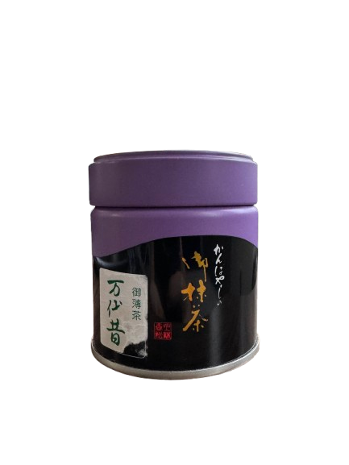 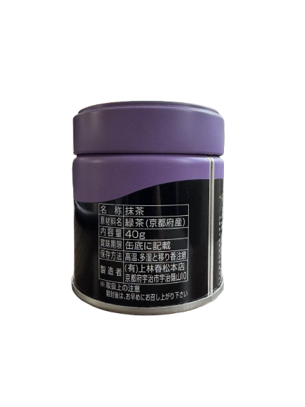rating: 9/10
repurchase: yes
gifted by bam, $20.00 for 40g ($0.50/g)
notes: loveee love lovee this matcha. lighter flavor, first ever matcha ive made and tastes amazing. used whole milk so it kinda drowned out the flavor but still learning! didnt check proportions but usually used 4–5g, 30g cold water, two shots of vanilla syrup and half cup of whole milk.
ceremonial matcha by aiya
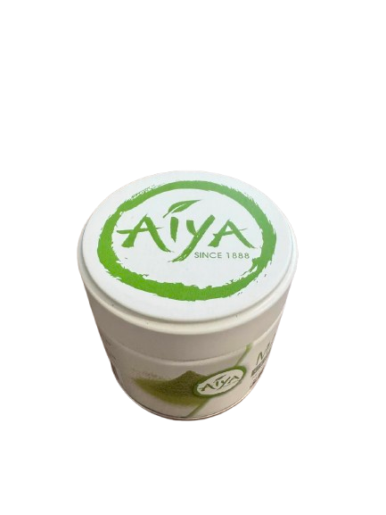 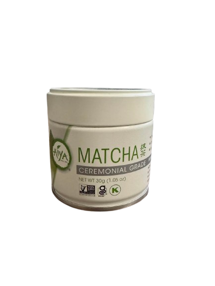rating: 7/10
repurchase: yes
bought from amazon, $15.99 for 30g
notes: delicous and very accessible! i got this matcha on black friday and rarely see it out of stock, the flavor is very similar to the daily matcha by mizuba tea. its refreshing and a solid option for lattes, i repurchased for a friend and would recommend it to people!
daily matcha by mizuba tea
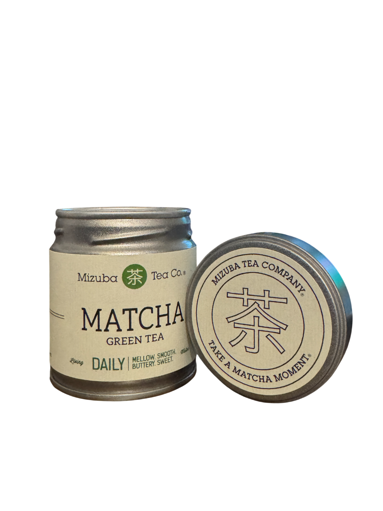rating: 9/10
repurchase: no
bought from mizubatea.com, $25.00 for 40g ($0.63/g)
notes: soooo good. super smooth and yummy. literally perfect for daily drinking. if the price wasn’t so high i would drink this 5g a day. hard to find, most of the time i check their website and its out of stock but i was lucky enough to catch a restock and it was so worth it !! the tin design and packaging is very pretty too
ikuyo matcha by ippodo
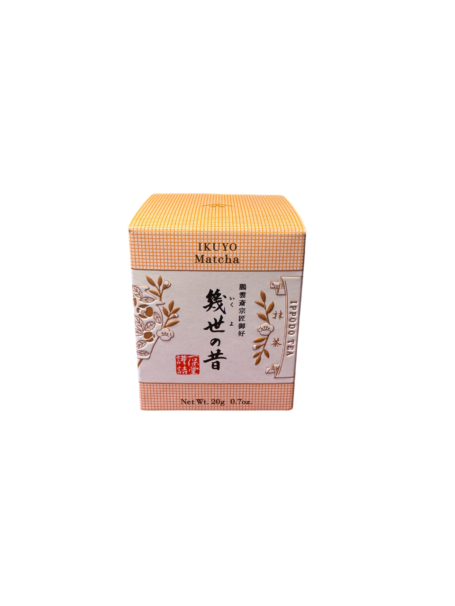 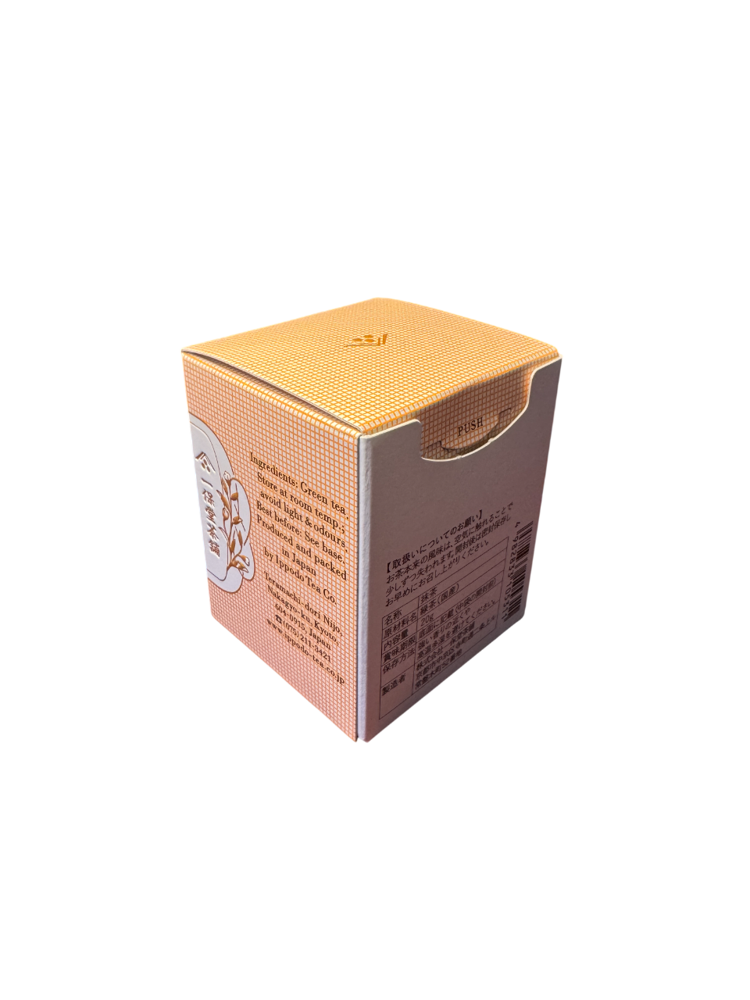rating: 8/10
repurchase: no
bought from ippodotea.com, $17 for 20g
notes: ippodo is a veryyy famous brand and ikuyo was recommended for lattes on their website ! bagged this one on black friday so shipping was free (for single purchases). the taste is amazing, very vegetal, grassy, refreshing, gorgeous green color. i wouldnt purchase again for the price but the taste is so so good
osada blend by rockys matcha
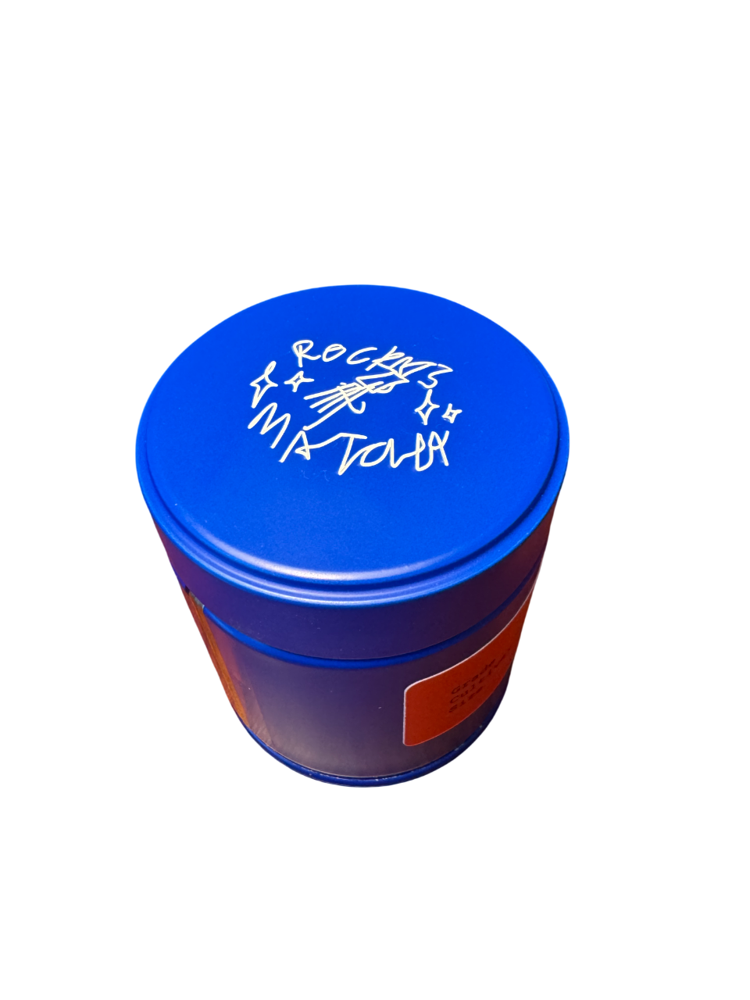 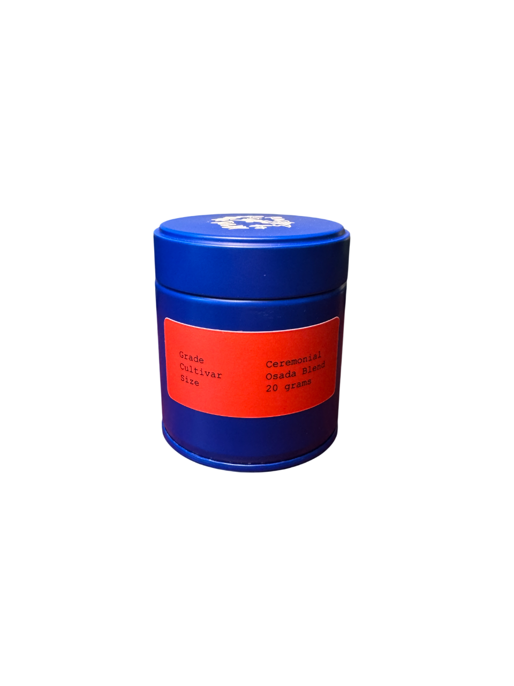rating: 8/10
repurchase: no
bought from ippodotea.com, $17 for 20g
notes: famous brand based in LA, was super excited to try this matcha. the tin is the best looking out of my whole collection, matcha was very earthy and umami. very different from the rest of the matchas before this. it was honestly really good, especially as a latte, but for the price point, i wouldnt repurchase it but id recommend people to try it if theyve never had rocky's matcha
yamabuki ceremonial matcha by miro tea
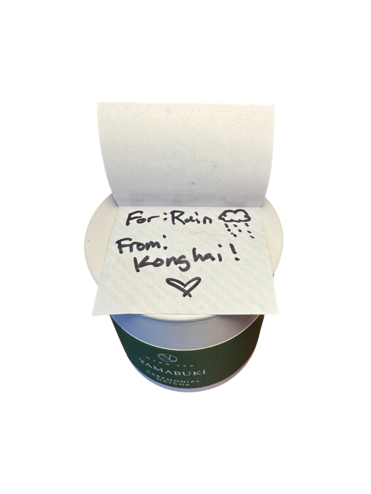 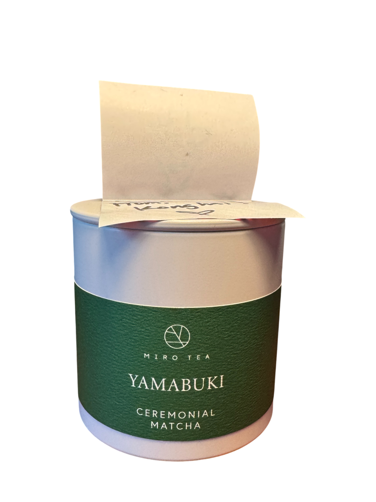rating: ?/10
repurchase: ?
gifted by konghai (my goat ilysm), $45 for 30g
notes: have yet to try it but im looking forward to it !!!! thank you so much konghai
x
ginger matcha by miro tea
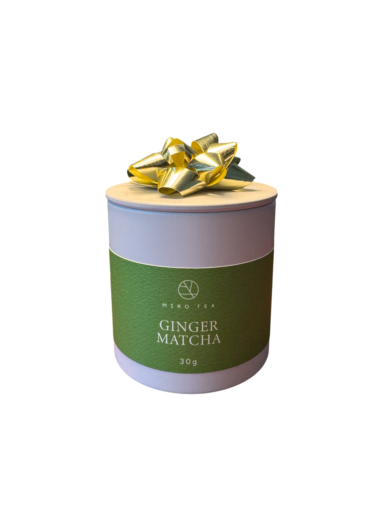rating: 7/10
repurchased: no
gifted by konghaiiiii, $40 for 30g
notes: tried it as an usucha with konghai and it was delicious! this is the first time ive ever heard of ginger matcha and it was a really unique taste. probably wouldnt drink it everyday but its a great experience and i had a great time making it with him. i love making matcha with friends!!
hojicha powder by hayashiya
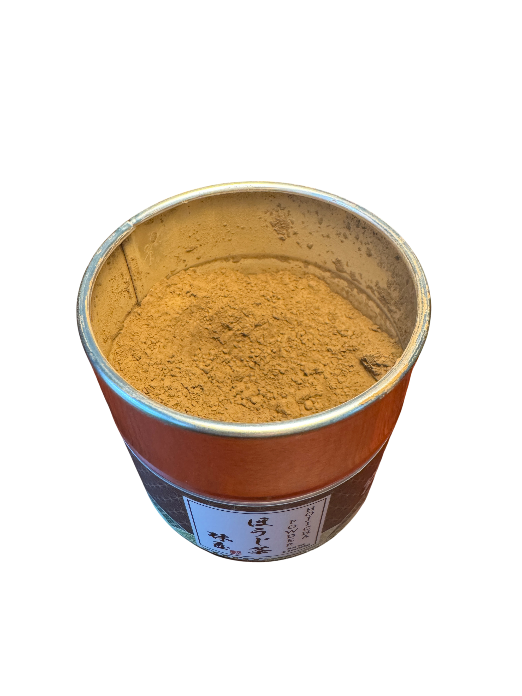 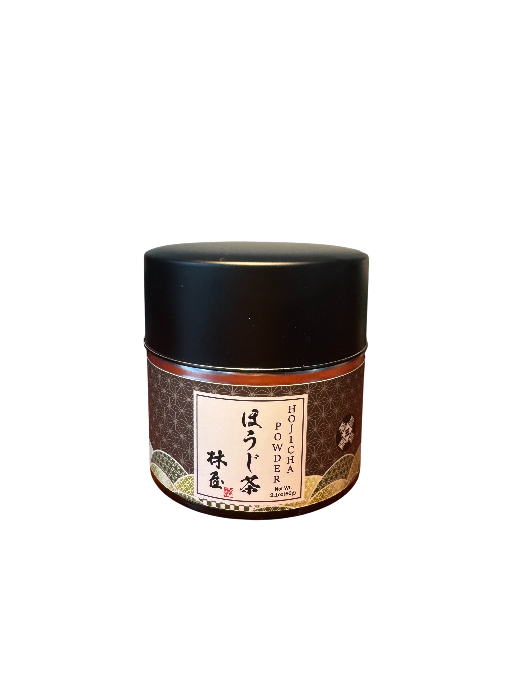rating: 6/10
repurchased: no
bought on amazon, $28 for 60g
notes: this is teh first time ive tried to make hojicha. its good! but im still getting used to the taste. this powder is really strong so i prefer to use more milk than usual